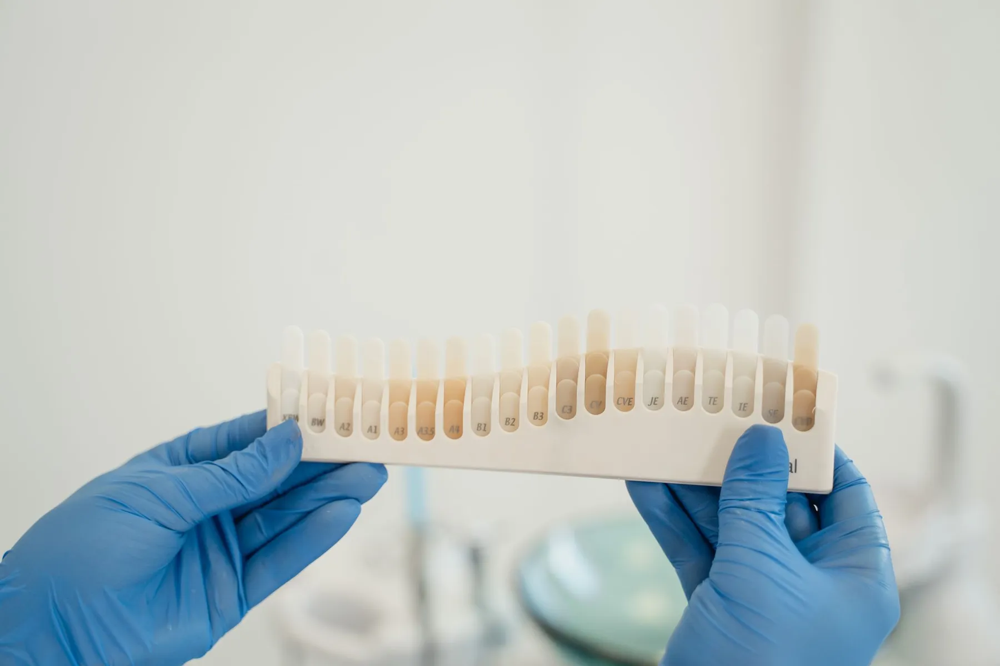

Dinleme
Şikâyetiniz, geçmiş tedaviler ve kullandığınız ilaçlar konuşulur.
Estetik kron merak ediyorsanız ya da yalnız bir kontrol istiyorsanız: önce sorularınız cevaplansın, sonra randevu notunuz hazır olsun.

Fotoğraf temsilîdirGenel bilgidir; size uygun olanı muayenede hekiminiz belirler.
Instagram'daki "Soru cevap" gibi: bir soruya dokunun, cevabı okuyun. Muayenede sormak isterseniz tek dokunuşla randevu notunuza ekleyin.
Genel bir anlatım: yayında hekimin kendi akışı yazılır.
Şikâyetiniz, geçmiş tedaviler ve kullandığınız ilaçlar konuşulur.

Ağız içi muayene; gerek görülürse röntgen istenir.

Bulgular sade bir dille anlatılır; soru sormanın tam zamanı.

Seçenekler ve sıralama konuşulur; başlama zamanına siz karar verirsiniz.
Seçimlerinize göre sağdaki fiş ve yanınıza alacaklarınızın listesi oluşur. Fiş, WhatsApp mesajınıza dönüşür.
Yayında muayenehanenin kendi fotoğrafları yer alır. Büyütmek için dokunun.